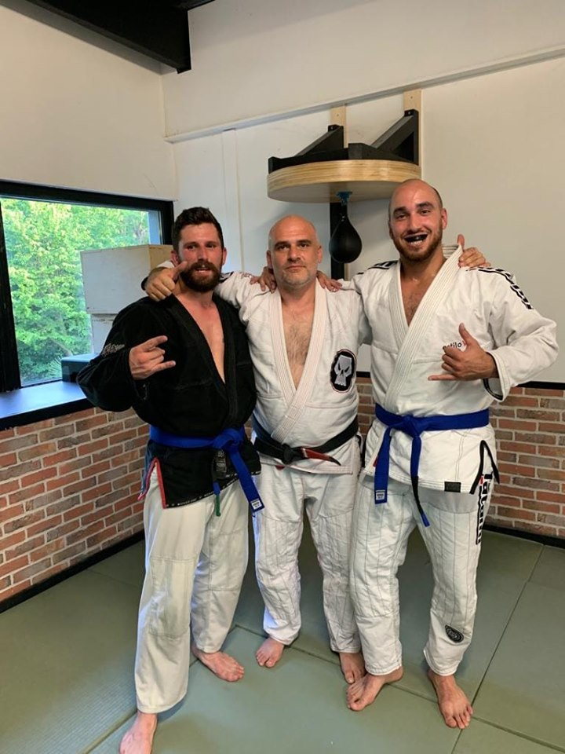
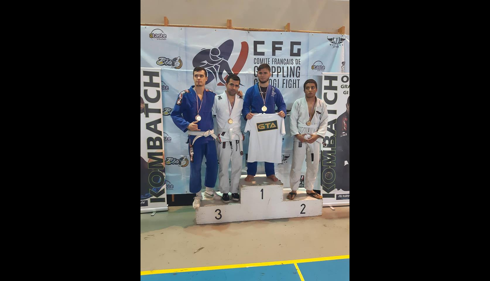
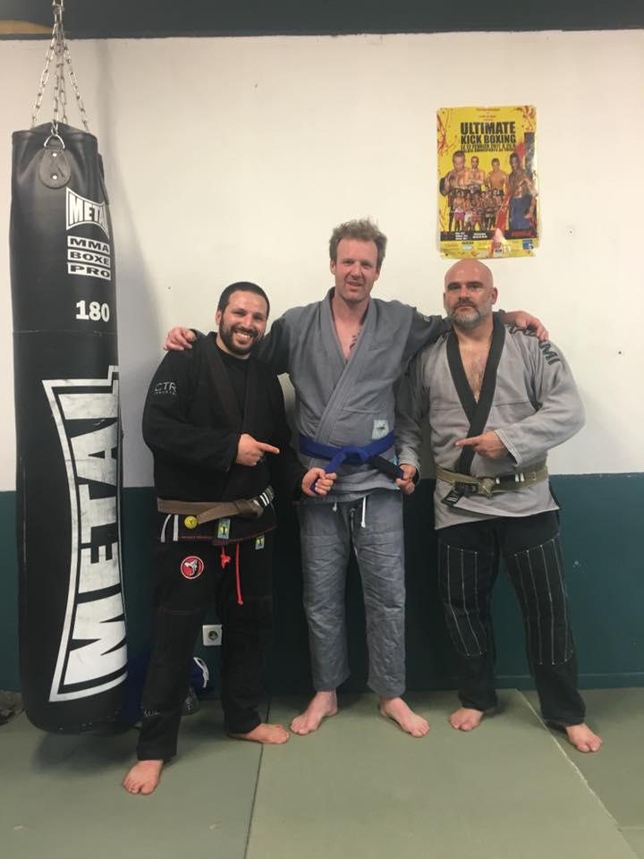

Club de jiu-jitsu brésilien, de grappling et de MMA à Taverny et Eragny-sur-Oise dans le Val-d'Oise (95)
02/02/2020 - Grappling Industries Bruxelles
Un grand bravo à nos trois compétiteurs Florian, Loic et Alex engagés dans la compétition de Grappling Industries ce week-end à Bruxelles.
Ils obtiennent un très bon résultat avec trois podiums, 1 médaille d'or et 2 médailles d'argent dans une compétition où participent les plus grosses équipes de JJB.
Les résultats de la compétitions sont visibles sur le site de Grappling Industries.
Trois podiums pour nos trois compétiteurs.
12/10/2019 - Une compétition pour sensibiliser sur l'autisme
Ce samedi la team a répondu présent à l'appel de la compétition organisée par la Mkteam d'Olivier Mako Michailesco dont les droits d'entrée seront
reversés à l'association Autisme Espoir Vers l'école. Preuve que le JJB est un sport de solidarité et de générosité avant tout. D'un point de vue
sportif, féliciations à Luc qui obtient une médaille d'argent en blanche pour sa première participation à une compétition, et félicitations à Flo
en bleue qui termine troisième de sa catégorie.
Compétition le JJB pour l'autisme.Première compétition et deuxième place pour Luc. Félicitations!Troisième place pour Flo en bleu. Félicitations!Réveil matinal pour être au rendez-vous des premiers combats...
29/09/2019 - Travaux dans la salle de Taverny
Attention, en raison de travaux de rénovation du dojo Jules Ladoumègues, les cours sont temporairement transférés sur le plateau voie des sports
près du gymnase André Messager dans les algécos qui se trouvent sur le terrain de basket.
Transfert des cours sur le plateau voie des sports près du gymnase André Messager.
22/06/2019 - Stage et remise de ceinture à Taverny
Ce samedi a eu lieu un stage dans la salle de Taverny à l'issue duquel, Alex et Imad
se sont vus remettre la ceinture bleue! De même ce lundi 24/06, à Eragny, ce fut le tour
de Loic et de Flo de recevoir la ceinture bleue. C'est le fruit d'un dur travail. Félicitations
à eux. Félicitations également à ceux qui comme Jules, Beranger, Icham, Antoine ont reçu une
barette qui vient récompenser leur travail de l'année et leur progression!
Imad et Alex en bleue.

Flo et Loic en bleue.
28/05/2019 - Festival de cinéma de Taverny
Cette année pour la 5ème édition du festival de cinéma de la ville de Taverny
le thème porte sur la relation "Sport et Cinéma". Le festival se propose d'explorer le vaste
territoire du sport dans le cinéma et toutes les facettes de l'expérience humaine
qu'il véhicule. A cette occasion, la LX Team prendra part aux festivités en assurant
une démonstration de Jiu-jitsu brésilien ainsi qu'une séance d'initiation gratuite offerte
à toutes les personnes désireuses de découvrir cet art martial. Ce sera l'occasion également
de découvrir les valeurs qui l'entourent telles que le respect, le partage, le courage, la solidarité.
La démonstration aura lieu le samedi 8 juin à 16h45 sur le parvis de la médiathèque à l'espace démonstrations.
Le programmme complet de l'événement est accessible en cliquant sur l'affiche du festival ci-dessous.
A samedi!
5e édition du festival de cinéma de la ville de Taverny.
02/03/2019 - Coupe de France CFG Reims
Ce week-end du 2-3 mars, la team était présente à la coupe de France CFG en GI et NoGI à Reims et ça s'est plutôt bien passé.
En GI:
Tom a fini premier en bleu dans la catégorie -77 kg et décroche sa première médaille d'or avec cette ceinture,
Bryce a fini troisième en bleu dans la catégorie -84 kg,
Alex a fini premier en blanche dans la catégorie -77 kg.
En NoGI Emeric a fini deuxième des -77 kg. Félicitations à eux ainsi qu'à tous les compétiteurs!
Médaille d'or pour Tom en bleu -77 kg.Médaille de bronze pour Bryce en bleu -84 kg.Médaille d'or pour Alex en blanche -77 kg.
17/02/2019 - Open Mat au Decathlon de Cergy Pontoise
Pour fêter la sortie de la ligne de kimono de JJB Decathlon Outshock, le magazin de Cergy a organisé une session de Jiu-jistu brésilien ouverte à tous.
La team a répondu présent à cette invitation aux côtés de la team Shinko de Jouy-Le-Moutier et des clients du magasin qui ont pu prendre part à leur premier cours de JJB.
La sortie de la ligne de kimono Outshock de Décathlon est une très bonne nouvelle pour ceux qui veulent commencer le JJB avec un kimono de qualité sans pour autant se ruiner.
Ainsi plus d'excuses pour ne pas se lancer dans la pratique du Jiu-jistu brésilien qui est un sport qui véhicule les valeurs de fraternité et d'amitié comme l'a encore démontrée cette journée d'inter-club.
Merci au Decathlon de Cergy pour l'organisation de cet événement!
Open Mat au Decathlon de Cergy.
06/01/2019 - Open Gi/NoGi Hauts-de-France
Pour la deuxième année consécutive, la team est au rendez-vous de l'Open des Hauts-de-France de Grappling GI/NOGI.
La récolte de médailles est plutôt bonne avec 7 podiums, 3 premières places, 2 deuxièmes places et 2 troisièmes places.
Félicitations à tous les compétiteurs!
7 podiums pour la team cette année dont 3 premières places.1ère place pour Loic en moins de 92 kilos.
16/12/2018 - Open IDF
De retour de l'Open IDF, la team revient avec 6 médailles dont une première place pour Loïc en -92 kilos.
La première place de Loïc et les autres médaillés.
27 octobre 2018 - GIC
Une grosse compétition que ce GIC 2018 à Nogent-Sur-Oise, avec près de 450 combattants en GI, des participants renommés comme Sebastien Lecoq, Mohamad Baillot, Jackson Paulo, et un niveau globalement relevé.
Dans ce contexte, nous adressons nos félicitations aux 3 médaillés de la team: Alex (médaille d'or en blanche, -77 kilos), Faycal (médaille de bronze en blanche, -84 kilos),
et Bryce (médaille de bronze en bleu, -84 kilos).
A gauche les 3 médaillés de la team Bryce, Alex et Faycal. A droite une photo de famille de la team.
30 septembre 2018 - Un début de saison encourageant!
La team a participé à l'open kombatch de Sevran en Gi ce dimanche 30 septembre 2018,
et s'en est plutôt bien sortie puisqu'elle remporte la compétition!
Ce résultat est dû aux deux très belles premières places de Jeremy et Imad qui se sont battus comme des lions.
Max a également réalisé un podium et termine 3e exequo de sa catégorie.
Félicitations à eux.
Les résultats de la compétitions sont disponibles ici:
résultats
Les premières places de Jeremy (-84 kilos) et Imad (-66 kilos).

La troisième place de Max (-71 kilos).
27 août 2018 - C'est parti pour une nouvelle saison!
Cette fois c'est parti! Les cours ont repris à Eragny dans une belle salle refaite à neuf. Chacun a renfilé son kimono ou en a emprunté un pour l'occasion et s'en est suivi le premier cours de cette nouvelle saison 2018-2019. Si vous voulez nous rejoindre, n'hésitez pas il y a de la place pour tout le monde!
Premier cours de la saison 2018-2019 à la LX Team!Et ça parle technique...
23 août 2018 - Reprise des cours lundi 27 août
Ca y est! Les travaux se terminent et une belle salle vous attend pour la saison 2018-2019! Rentrée prévue ce lundi 27/08 dans la salle d'Eragny à 19h.
Nouveauté de cette année 2018-2019, des créneaux de cours supplémentaires auront lieu sur Taverny (95) dans une salle mise à disposition par la mairie qui a fait confiance à Xavier notre coach pour assurer la mise en place d'une activité JJB au sein de la ville. Cela va multiplier les possibilités de pratiquer le JJB avec la team pour tous ceux qui le souhaitent!
Rejoignez la LX Team pour cette saison 2018-2019!
11 août 2018 - Training au Decathlon d'Osny
La salle d'Eragny est actuellement en travaux de rénovation en ce mois d'août afin de se refaire une beauté pour la nouvelle saison 2018-2019.
En attendant, la team établit temporairement ses quartiers au Decathlon d'Osny dans un espace dédié à l'accueil des clubs. Merci au magasin et plus particulièrement à Nasser du rayon fitness de nous avoir offert l'opportunité de nous entraîner en ce mois de vacances et de travaux. L'endroit est super agréable. C'est également l'occasion pour ceux qui le veulent de venir découvrir la team. Prochain rendez-vous ce mercredi 22/08 à 19h.
Petite info... il paraîtrait que Decathlon prépare une ligne de produit dédiée au JJB. Ce serait une belle marque de reconnaissance pour notre sport en plein développement et l'occasion pour les pratiquants de pouvoir s'équiper sans se ruiner!
La team devant le Decathlon d'Osny.La team devant le rayon fitness au Decathlon d'Osny.
07/07/2018 - Promotion black-belt
Nos deux coachs Xavier et Houlem ont eu l'honneur d'être promus au rang de black-belts par Alexis De Bretagne et Manu de la team Phoenix BJJ (Paulo Sergio). Alexis de Bretagne est un des pionniers du JJB en France et il nous a partagé quelques unes de ses techniques terriblement efficaces à l'occasion d'un stage très enrichissant ce samedi. Un grand merci à eux deux!
Photo de groupe après la remise des deux ceintures noires avec de gauche à droite Houlem, Alexis, Manu et Xavier.
15/06/2018 - Soirée avec la team Akamat
Ce vendredi nous avons eu le plaisir de recevoir la team Akamat de Saint-Gratien (95). La soirée s'est déroulée dans un très bon esprit, d'échange, de partage, de convivialité et de respect mutuel. C'est ça l'esprit JJB. A renouveler!
Photo de groupe avec la team Akamat.Au centre Mark Akakpovi coach de la team Akamat, entouré des coach Houlem à gauche et Xavier à droite de la LX Team.
08/06/2018 - Les inscriptions 2018-2019 c'est parti!
Les inscriptions pour 2018-2019 sont lancées. Le formulaire est disponible au club, à récupérer par exemple après un cours d'essai.
Le formulaire 2018-2019.
08/06/2018 - Un avant goût des vacances...
Merci aux membres de la LX Team pour ces belles photos lors de leur séjour au quatre coins du monde.
Loic à Marseille.Nasser à Oman.Tom en Namibie.
16/05/2018 - Promotion tatami
Félicitations aux nouveaux promus Tom, Flex et Bryce qui ont obtenus de façon méritante leur ceinture bleue.
Tom en ceinture bleue, entouré de Flo, ceinture violette et de Xavier le coach.Flex en ceinture bleue, entouré des deux coachs Houlem et Xavier.

Bryce en ceinture bleue, entouré des deux coachs Houlem et Xavier.
17/02/2018 - Mantes Challenge
La team était au rendez-vous du Mantes Challenge 2018 ce week-end avec 7 compétiteurs engagés et un résultat de 4 podiums. Un grand merci à nos supporters et à notre sponsor Barlou Tattoo Shop de Pontoise!
La team et ses 4 médaillés: Tom et Alex en -77kg, Imad en -62kg et Jeremy en -84kg.Le podium de Tom et Alex en -77kg.Le podium de Jeremy en -84kg.
02/02/2018 - La team a sa banderole
Merci à nos amis du Barlou Tattoo Shop le club a maintenant une banderole. Ce sera la classe sur les podiums!
Une partie de la team derrière la nouvelle banderole.
07/01/2018 - Open Gi/NoGi Hauts-de-France
Ce week-end du 07/01/2018, la team a réalisé une belle performance à Lille avec 9 podiums à l'occasion de l'open Gi/NoGi des Hauts-de-France
dont une médaille d'or d'Alex Flex en -77 kilos débutants, un grand chelem pour la catégorie des -92 de kilos débutants les 3 marches étant occupées par des représentants de la LX Team, et une médaille d'argent en catégorie féminine pour Anouchka. Félicitations à elle pour sa première participation en compétition.
Photo de groupe devant le podium, la team dont le coach Xavier Lesigne et 9 médaillés.Carton plein en moins de -92 kilos!
10/12/2017 - Open Ile de France Gi
Super performance de la team ce week-end à l'open d'Ile de France Gi puisque sur 6 compétiteurs inscrits, 5 repartent avec une médaille dont 3 en or. Félicitations aux médaillés:
Faycal, médaille d'or en -92 kilos,
Bryce, médaille d'argent en -92 kilos,
Jeremy, médaille d'or en -84 kilos,
Tom, médaille d'or en -77 kilos,
Alex, médaille de bronze en -77 kilos.
Photo de la team devant le podium.Médailles de Faycal et Bryce en moins de 92 kilos.Médaille de Jeremy en moins de 84 kilos.Médaille de Tom et Alex en moins de 77 kilos.La team et ses supporters qui ne combattaient pas mais ont fait le déplacement. Merci à eux: Flo, Nasser, Medhi, Anouchka.
03/12/2017 - VLB Fight
Résultat du VLB Fight de Villiers-le-bel en Gi avec une 2e et 3e place. Félicitations aux médaillés.
Troisième place d'Imad au VLB Fight.
26/11/2017 - Open Du Grand Est De Grappling - Reims
Résultat de l'open, après une longue journée, un grand bravo à nos 4 compétiteurs de la LX Team qui ont fait la plus part des combats en bleue au lieu de blanche,
avec 2 premières places, une deuxième place et une 4 ème encore un grand bravo aux médaillés.
Félicitations à Jeremy, Imad et Bryce pour leurs médailles.